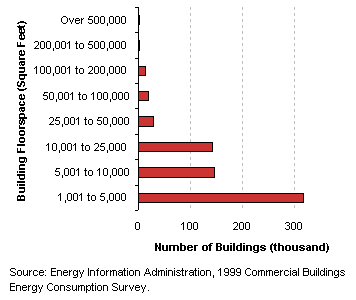
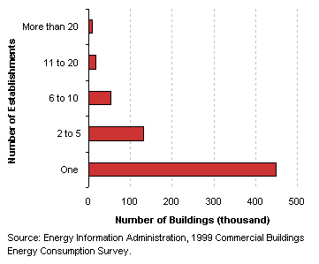
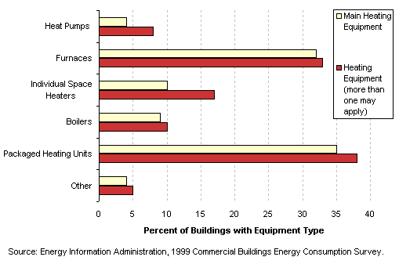
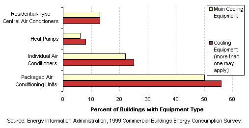
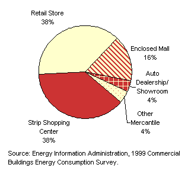
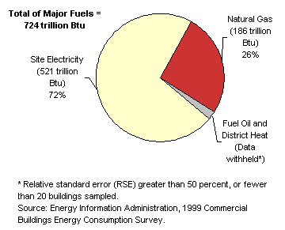

| |
|
Characteristics
by Activity...
Mercantile
|
Mercantile
buildings are those used for the sale and display of goods other than food
(buildings used for the sales of food are classified as food
sales). This category includes enclosed malls and strip shopping centers.
Basic Characteristics
[ See also: Equipment | Activity
Subcategories | Energy Use
]
| Mercantile
Buildings...
- Almost half of all mercantile buildings were
less than 5,000 square feet.
- Roughly two-thirds of mercantile buildings housed
only one establishment. Another 20 percent housed between two
and five establishments, and the remaining 12 percent housed six
or more establishments.
Tables:
Top
|
|
Number
of Mercantile Buildings by Building Size Category
Mercantile
Buildings by Number of Establishments  |
Equipment
Table: Buildings,
Size, and Age Data by Equipment Types
Predominant
Heating Equipment Types in Mercantile Buildings

Predominant
Cooling Equipment Types in Mercantile Buildings

Top
Activity
Subcategories
Building
respondents who reported that their building was a mercantile building
were then asked to place the building into the following more specific
categories:
- an enclosed
mall
- a strip
shopping center
- a car dealership
or showroom
- an alcoholic
beverage store
- a store
that rents items such as videos, equipment, or vehicles
- a free-standing
store such as a department, furniture, clothing, hardware, drugstore,
or bookstore
- some other
type of retail building
|
|
Percent
of Floorspace of Mercantile Buildings by Subcategory |
There were enough buildings
in the responding sample to report statistics for enclosed malls, strip
shopping centers, auto dealerships/showrooms, and free-standing stores (shortened
to "retail stores"). The rest of the mercantile activities have
been combined into the other mercantile category. Table:
Selected
Data by Type of Mercantile Building
Top
Energy
Use
Mercantile
buildings used 724 trillion Btu of total energy, which was 13 percent
of total energy consumption for all commercial buildings. Since
they comprised 15 percent of commercial floorspace, this means that
their total energy intensity was slightly below average.
|
|
Mercantile buildings predominantly used electricity as an energy
source, accounting for 17 percent of all commercial electricity
use.
Tables:
Reference:
What is a Btu? |
|
Energy
Consumption in Mercantile Buildings by Energy Source

|
The
total energy consumption data in the figures and tables above are “site
energy,” which includes only the amount of electricity consumed
within the building; energy use can also be expressed as “primary
energy,” which includes the energy consumed during the generation
and transmission of electricity.
Mercantile buildings used 1,573 trillion Btu of primary electricity, so
their total primary energy consumption was 1,776 trillion Btu, or 15 percent
of total primary consumption for all commercial buildings.
Top
Specific questions may be directed to:
Joelle Michaels
joelle.michaels@eia.doe.gov
CBECS Manager
Release date: July 24, 2002
Page last modified:
May 4, 2009 2:52 PM
http://www.eia.gov/consumption/commercial/data/archive/cbecs/pba99/mercantile/mercantile.html
If you are having any technical problems with this
site, please contact the EIA webmaster at wmaster@eia.doe.gov. |